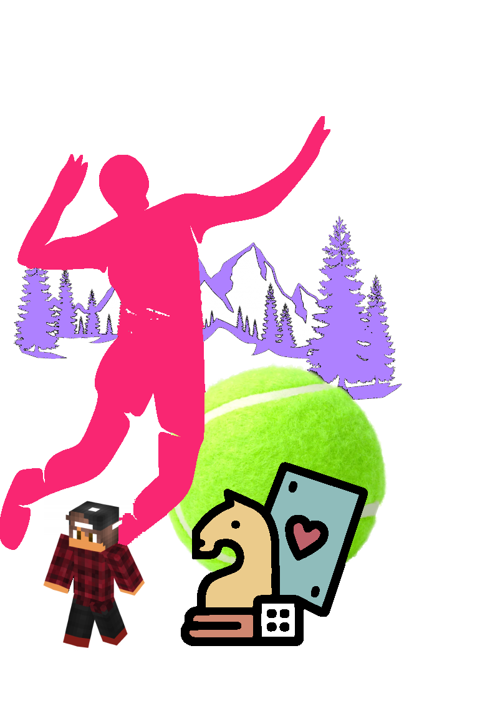
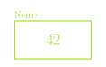
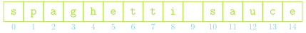
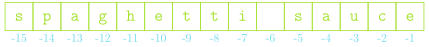

Getting Started Typing
Jed Rembold
July 10, 2024
Announcements
- Welcome to CS-500: MSCS Bridge!
- Things to do:
- Access the course webpage here!
- There will also be a link to the course webpage from the Canvas site once it forms
- Read over the full syllabus
- Get signed up with a GitHub account if you don’t already have one (or if you want a separate one for school)
- Access the course webpage here!
- Homework
- Project 1 guide will be posted by the end of tomorrow
Intro
My Vitals
- Name
- Jed Rembold
- Office
- Ford 214
- Office Hours
- Online by appointment or anytime I’m around
- Email:
- jjrembold at willamette.edu
- Office Phone:
- 503-370-6860

How to Succeed
- Folks are entering this course with a variety of initial experiences
- I’m targeting a starting point just slightly past the “very beginning”
- Path to Success
- There can be a significant time commitment for this course
- The main way to get good at coding is to do coding
- Coding can often times involve a lot of frustrating troubleshooting or failed attempts
- Expect, on average, the full use of WU’s 2-3 hours outside class for every hour in class
- If you are stuck for more than 30 minutes, ask myself or AI or
another mentor for help
- While it is important to give yourself time to troubleshoot, past a certain point continuing to bang your head against a problem just leads to frustration
- There can be a significant time commitment for this course
Grading
- All end of semester grades are credit/no-credit.
- Credit is anything >70%
| Participation | 50% |
| Projects | 50% |
Participation
- Class will often times have “understanding check” polling questions
- Just a web interface you can respond with
- Answering at all gets you credit, correct answers will get you a bit of extra credit
- A large portion of class will be dedicated to pair-programming
exercises each week
- You get full credit for you and your partner completing all the exercises
Projects
- Each week will have a different project for you to work on
- All will be due on Thursdays at 11:59pm
- Submissions will be handled through GitHub Classroom
- Learning how to do this in class
- 2 cumulative late days over the entire semester without penalty then penalties enacted for each subsequent day late
- Extensions for any reason need to be requested and approved by myself
Academic Honesty
- You must not look at solutions or program code that is not your own.
- You must not share your solution code with other students.
- But you are welcome (and encouraged!) to work alongside others en route to finding a solution.
- You must indicate on your submitted assignment any assistance you received or who you worked alongside.
AI
- You are free in this class to use things like ChatGPT or GitHub Copilot to assist you in writing, understanding, or troubleshooting code
- However:
- LLMs make mistakes, and you need to understand the code to be able to catch them. If you can’t explain what every line of a piece of code is doing, that is a problem.
- I just ask that you make a note on the assignment if you got help from one of these sources, and link to the transcript if possible.
Diving In
- This course is an introduction on computer science, and covers more than just programming!
- Python is used to teach the programming portion of the course, but the focus is less on Python itself and more on general computer science principles.
- If you come across situations where you need to know a bit more about specific Python details, there are plenty of resources online, or just ask me!

Effective Communication
- To communicate effectively with someone or
something, you really need two layers of communication:
- A shared language or method of conveying
information
- The English alphabet, for example
- In our case, Python
- A joint agreement about what constitutes
meaning
- Need ways to limit confusion or misunderstanding
- Following conventions
- Being able to explain things clearly and unambiguously
- Need ways to limit confusion or misunderstanding
- A shared language or method of conveying
information
Algorithms
- The process of designing a solution strategy to a problem is called algorithmic design
- An algorithm is just an approach or recipe for a method to
solve a particular problem
- Most commonly language agnostic
- Algorithms are not a new concept
- Euclid’s algorithm to find the greatest common divisor, for instance
- A large part of computer science is focused on the study or analysis of algorithms
Algorithm ⮕ Code
- You need to have an algorithm in place before you
can write the code to tell the computer what you want to do
- Imagine an alien asking me how to bake a cake. I need to understand the steps to baking the cake before I can even worry about the translation or communication
- Programming tools like conditional statements and loops will
frequently play a role in your algorithm, but as general concepts
- I can easily describe a loop to you without needing the exact syntax of Python
- The implementation of the algorithm is the act of translating it into Python (or whatever language you are using)
Numeric Types
Data Types
- Generally, the data processed by computers can take on many forms
- A data type defines the common characteristics of some data
values that have a certain form or purpose.
- Ex: a whole number or integer has certain characteristics common to all integers
- A data type has a domain, which is the set of all potential
values that would belong to that type.
- Ex: 0, 1, 2, 3, 4, 5, 6, 7, …
- A data type has a set of operations that define how those
values can be manipulated
- Ex: You can add two whole numbers (5 + 2)
Numeric Types
- Initially, we’ll focus on the numeric types
- Python has 3 data types for representing numbers:
intfor integers and whole numbers1, 2, 3, 10, 1001010101, -231floatfor numbers containing a decimal point1.23, 3.14, 10.001, 0.0, -8.23complexfor numbers with an imaginary component (which we won’t deal with)
Expressions
- Python describes computation using arithmetic expressions,
which consist of terms joined by operators
- Very similar to how a logical English sentence has nouns connected by verbs
- A term in an expression can be:
- an explicit numeric value (called a literal) like 1 or 3.14
- a variable name serving as a placeholder to a value (more on those in a moment!)
- a value resulting from the output of a function call (more on those on Monday!)
- another expression enclosed in parentheses
Integer and Float Operations
i + j the sum ofiandji - j the difference betweeniandji * j the product ofiandji // j the floor division ofibyji / j the division ofibyj†i % j the remainder wheniis divided byji ** jito the power ofj‡-j the negation ofj
– Returns
int if both i
and j are integers,
float otherwise
† – Returns
float always
‡ – Returns
float always if
j is negative
Order of Operations
- Basic order of operations applies just like in math!
- Operations in parentheses done first
- Without parentheses, order of operations proceeds as:
**(exponents, executed right to left)-n(negative numbers)*,/,//,%, executed from left to right+and-, executed from left to right
Understanding Check
What is the value of the below expression?
1 * 2 * 3 + (4 + 5) % 6 + (7 * 8) // 9
- 15
- 18.22
- 42
- 83
Boolean Expressions
Python defines two types of operators that work with Boolean data: relational operators and logical operators
Relational operators compare values of other types and produce a boolean
True/Falseresult:==Equals !=Not equals <Less than <=Less than or equal too >Greater than >=Greater than or equal to Be careful!
==compares two values. A single=assigns a variable. The odds are high you’ll use one when you meant the other at least once this semester!
The Vulcan Way
Logical operators act on Boolean pairings
Operator Description A and BTrue if both terms True, False otherwise A or BTrue if any term is True, False otherwise not ATrue if A False, False if A True (opposite)
- Order of operations follows parentheses and then proceeds left to right
- Careful that
oris stillTrueif both options areTrue - Similarly, careful with combining
notwithandandor- “Not A or B” in common English is not the same as
not A or B
- “Not A or B” in common English is not the same as
Variables
Tis Variable
- One of the terms that can appear in expressions is what we term a variable
- A variable is a placeholder or nametag for a value that can be updated as the program progresses
- Envision as a named box capable of storing a value

- Each variable has the following attributes:
- A name: which enables you to tell variables apart
- A value: which represents the current contents of the variable
- A variable’s name is fixed, but the value can change whenever you assign a new value to the variable
Making Assignments
You create a variable by assigning it a value with Python’s assignment statement,
=, a single equals sign:|||variable name||| = |||expression|||The
|||variable name|||must appear on the left of the=in Python!Python first computes the value of the right-hand side of the equals and then assigns to the name on the left
The same variable name can seem to appear on both sides of the equals!
total = total + value- The
totalon the right represents some existing value - The
totalon the left is the new label of whatever the right expression evaluates to
- The
Ephemeral Variables
When you assign a new value to a variable, the old value is lost
>>> A = 10 >>> A 10 >>> B = A + 5 >>> B 15 >>> A = B >>> A 15
Variables defined in terms of others do not get automatically updated
Python evaluates expressions from the top down
>>> A = 10 >>> B = A + 2 >>> A = 8 >>> B 12
The Power of Names
- Names for variables, functions, and (eventually) classes are called identifiers
- Composed of letters, numbers and underscores, but can not start with a number
- A variety of different conventions to mark word boundaries:
- Snake case uses underscores:
this_is_amazing - Camel case uses uppercase:
thisIsAmazing
- Snake case uses underscores:
- We will aim to follow the following conventions:
- Variable and function names will use snake case
- Constant variables will use all uppercase and underscores:
MAX_WIDTH - Class names will use camel case and begin with a capital letter
- Capitalization matters!
radiusandRadiusare different variable names! - Pick meaningful variable names!
Shorthand and Multiple Assignments
It is very common to want to adjust an existing variable value
balance = balance + depositPython gives you a shorter expression to describe this relationship:
balance += depositYou can do this with any operation (
|||op|||) following the general form:|||variable||| |||op|||= |||expression|||You can name multiple variables at once by separating with commas
A, B, C = 1, 2, 3- All the expressions on the right are computed before being assigned to the left variables
- This can give you a very concise way of swapping variable values
Understanding Check!
What is the output value of A in the code
below?
>>> A = 10
>>> B = 4
>>> C = A * B
>>> A -= B
>>> A, B, C = C, A, B
>>> A
??- 4
- 10
- 30
- 40
Understanding Check
What value is printed when the code to the right runs?
TrueFalse- 5
- This would give an error
A = 10
B = 4
C = 1
A *= B
if A > 40 and C != 10 % 4:
print(B+C)
else:
print(A < B or not (C == 10 // 4))
Strings
A String primer
- A string in Python in a data type that represents textual
data, in the form of a sequence of individual characters
- Domain: all possible sequences of characters
- Operations: Many! But we’ll keep in quite simple initially
- Denoted by placing the desired sequence of characters between two
quotation marks
'I am a string'- In Python, either single or double quotes can be used, but the ends
must match
"I am also a string!""I'm sad you've gone"
Lengths
The number of characters in a string is commonly called its length
The length of a string can be found using the built-in function
len()>>> len("Totally awesome") 15In practice, this function works for any sequence, of which strings are just our first example
Character Picking
- A string is an ordered sequence of characters
- Character positions in the string are identified by an index, which starts at 0

You can select individual characters from the string using the syntax
|||string|||[|||k|||]where
|||string|||is the variable assigned to the desired string and|||k|||is the index integer of the character you want>>> print("spaghetti sauce"[5]) e
Back it Up
- Sometimes it is more useful to count from the end of the string, not the beginning
- Python gives you a convenient way to do this, using negative indexes

A common use case is to grab the last character of the string, using
s[-1]which is shorthand for
s[len(s)-1]
Slicing
Often, you may want more than a single character
Python allows you to specify a starting and an ending index through an operation known as slicing
The syntax looks like:
|||string_variable|||[|||start||| : |||limit|||]where
|||start|||is the first index to be included and everything up to but not including the|||limit|||is included|||start|||and|||limit|||are actually optional (but the:is not)- If
|||start|||omitted, the slice will begin at the start of the string - If
|||limit|||omitted, the slice will proceed to the end of the string
- If
and Dicing
Can add a third component to the slice syntax, called a stride
|||string_variable|||[|||start||| : |||limit||| : |||stride|||]Specifies how large the steps are between each included index
Can also make the stride negative to proceed backwards through a string
>>> s = "spaghetti sauce" >>> s[4:8] hett >>> s[10:] sauce >>> s[:10:2] sahti
Concatenation
Concatenation is the act of taking two separate objects and bringing them together to create a single new object
For sequences, of which strings are a type, concatenation takes the contents of one sequence and add them to the end of another sequence
Python overloads the
+operator to concatenate sequences like strings- This is why keeping track of variable types is important!
+will add two numbers, but will concatenate two strings!
>>> 'fish' + 'sticks' 'fishsticks'- This is why keeping track of variable types is important!
Unlike in addition, order matters here!
>>> 'sticks' + 'fish' 'sticksfish'
Repeat again?
- We’ve seen how we can use addition (
+) in Python to concatenate strings - In math, adding something many times is the same as multiplying
\[5+5+5+5+5+5 = 6 \times 5\]
- The same logic holds true for Python strings!
- You multiply by a integer: the number of times you want the concatenation repeated
- You can not multiply two strings together, Python will not understand what you are trying to do
print("Betelguese, " * 3)
Comparing Strings
Python lets you use normal comparison operators to compare strings
string1 == string2is true if
string1andstring2contain the same characters in the same orderComparisons involving greater than or less than are done similar to alphabetical ordering
- Start at the beginning and compare a character. If they are the same, then compare the next character, etc
All comparisons are done according to their Unicode values.
- Called lexicographic ordering
"cat" > "CAT"
String Looping
- Because strings are a sequence, they will work directly in a
forloop! - In general, you have two options of how you want to loop through a string:
s = "hello"
for i in range(len(s)):
print(s[i], 'is letter', i)s = "hello"
for letter in s:
print(letter)- Looping by letter can be very convenient, but you lose positional information
- You can always select the desired letter if looping by index
Can’t change a string’s colors
Strings are what we call immutable: they can not be modified in place by clients.
You can “look” at different parts of the string, but you can not “change” those parts without making a whole new string
s = "Cats!" s[0] = "R" # THIS WILL ERROR!!You can of course create a new string object with the desired traits:
s = "R" + s[1:]This applies to all methods that act on strings as well: they return a new string, they do not modify the original
Basic IO
Output: print
We’ve seen how to output the value of a variable from within Python’s REPL, but that won’t work in a script
Python’s built-in
print()function will display whatever is between the()to the terminal>>> A = 10 >>> print(A) 10If you want to display several things, separate each thing by a comma inside the
printstatement. This will insert a space between each when printed.>>> print(1,3,5) 1 3 5
F not G
Constructing text or a sentence by interleaving strings and other objects comes up a lot in communicating code results to a user
For any Python version past 3.6, the nicest and easiest way to do this is with what are called f-strings:
A = 10 print(f"The value of A is: {A}!")You can define an f-string anytime you would normally define a string, just be aware that the substitution happens with the values of variable at that point
A = 10 s = f"The value of A is {A}" A = 12 print(s)
Getting some input
We’ve seen how to display information to a user, but to retrieve data from a user, we can use Python’s built-in
input()functionThe form will generally look like:
|||variable||| = input(|||prompt_text|||)|||variable|||is the variable name you want to assign the user’s typed input to|||prompt_text|||is the string that will be displayed on the screen to communicate to the user what they should be doing
The
input()function always returns a stringIf you want to get an integer from the user, you will need to convert it yourself after retrieving it
num = int(input('Pick a number between 1 and 10: '))
Demo: Hailstone Problem
Hailstones
- In Douglas Hofstadter’s book Gödel, Escheer, Bach, he
includes the following puzzle:
- Pick some positive integer and call it
n - If
nis even, divide it by two. - If
nis odd, multiply it by three and add one. - Continue this process until
nis equal to 1.
- Pick some positive integer and call it

Our Problem
- Suppose we want to prompt the user to enter a starting value for
nto kick off the sequence - Then we’ll run through the sequence, printing it off as we go.
- At the end, we’ll summarize how many total steps it took us to reach 1.
Break Time!
Pair Programming
Pair Programming Description
- Every week we will have time set aside for pair programming
- How it works:
- 1 driver: the person allowed to type
- 1-2 navigator(s): observers reviewing what is typed and brainstorming. Not allowed to type
- Roles will rotate every 5-6 minutes (there will be an alert)
- Talking is key! Communicate about what the problem is asking, how you might think about approaching the problem, and how you can translate that approach into Python.
- How does it work remotely?
- Easiest approach is the Live Share extension through VSCode
- 1 person accepts the assignment link, downloads and opens the repository in VSCode
- Then they can click on “Share (Read/Write)” and paste the invite URL into their group’s chat
- Other’s can then join, edit the code in a collaborative way, and view the console
- When done, have the same person save the code written and upload it back to the repository.
This Weeks Pairs and Problems
- For this first week, the pairings will be:
- Room 1: Hailee and Lucie
- Room 2: Jace, Bryant, and Gokce
- The repository with the problems for this week can be accepted here.
- First person to accept will need to name the group (just use first names)
- Any others who accept will join that group and then have access to the same shared repository.